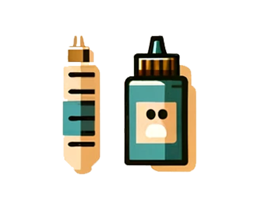

Creating your own dog meals at home can be both rewarding and nutritionally beneficial for your pet. The AKC offers a variety of recipes that are both delicious and healthy.
DIY Dog Treats
Treat your dog with homemade snacks! The AKC provides easy-to-follow recipes for treats that support your dog's health and are sure to get tails wagging.

Special Diet Recipes
For dogs with special dietary needs, crafting meals at home ensures they get the necessary nutrition. Check out AKC's recipes tailored for dogs with specific health requirements.